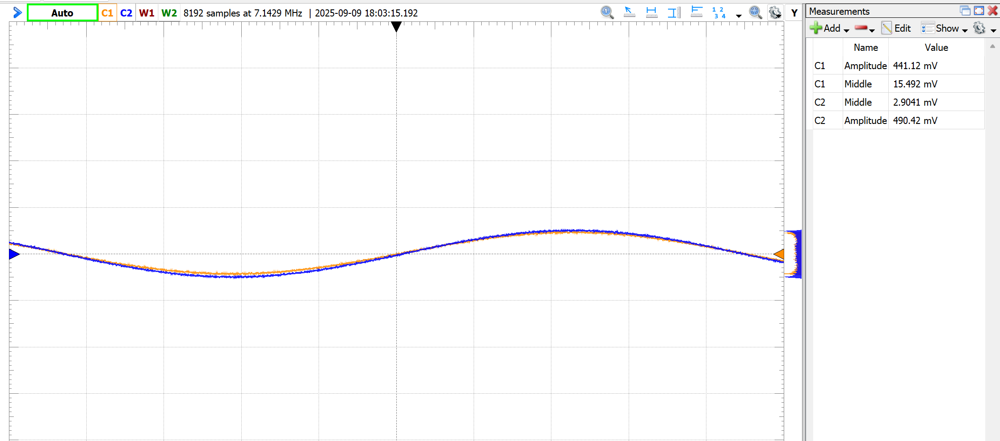

A discrete emitter-follower buffer
An NPN emitter-follower built around a BC547 (the canonical small-signal transistor) for buffering a 500 mV / 1 kHz sine between a 5.6 kΩ source and a 680 Ω load. The project is half "design the bias point", half "measure how reality diverges from the textbook."
The design choices
- VCC = 7 V, with VE set to 3.5 V, halfway up the rail, so the signal has equal swing headroom in both directions.
- IE = 1 mA → RE = 3.5 kΩ.
- Base bias from a voltage divider. The "stiffness" factor k = 3 is on the soft side, on purpose. The source resistance is 5.6 kΩ, so the divider must not load the input. With k = 3: R2 = 280 kΩ, R1 = 140 kΩ.
- 22 µF AC-coupling capacitors at input and output.
The numbers
Calculated input impedance: ~52 kΩ, predicting a source-side voltage divider of
52k / (5.6k + 52k) ≈ 0.903. So the buffer should hand the base
roughly 90% of the source amplitude, and from there an emitter-follower
almost-unity-gains the signal to the load.
Measured: input 492 mV, output 410 mV → ratio 0.83. Below target. Tuning RE down to 1.52 kΩ (which raises IE to ~23 mA, giving better re) brought it up to 441 mV / 490 mV = 0.90, exactly the predicted ratio. Lower-frequency knee from measurement: f−3dB ≈ 13 Hz.



What I would do differently
Higher divider stiffness if the source could tolerate it (5–20× IB instead of 3×) for more β-independence. Bigger coupling caps if low-frequency response matters. And if precision is the goal, do not build an emitter follower at all. Use an op-amp with a buffered output. The discrete transistor was the assignment, not the optimum.